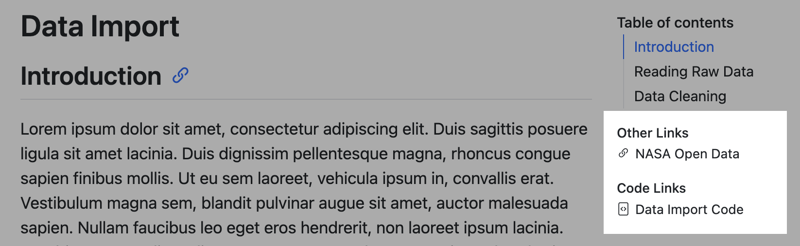

HTML Basics
Overview
Use the html format to create HTML output. For example:
---
title: "My document"
format:
html:
toc: true
html-math-method: katex
css: styles.css
---This example highlights a few of the options available for HTML output. This document covers these and other options in detail. See the HTML format reference for a complete list of all available options.
Table of Contents
Use the toc option to include an automatically generated table of contents in the output document. Use the toc-depth option to specify the number of section levels to include in the table of contents. The default is 3 (which means that level-1, 2, and 3 headings will be listed in the contents). For example:
toc: true
toc-depth: 2Use the toc-expand option to specify how much of the table of contents to show initially (defaults to 1 with auto-expansion as the user scrolls). Use true to expand all or false to collapse all.
toc: true
toc-expand: 2You can customize the title used for the table of contents using the toc-title option:
toc-title: ContentsIf you want to exclude a heading from the table of contents, add both the .unnumbered and .unlisted classes to it:
### More Options {.unnumbered .unlisted}The HTML format by default floats the table of contents to the right. You can alternatively position it at the left, or in the body. For example:
format:
html:
toc: true
toc-location: leftIf you would like to display a table of contents both in the body and floating left or right, you can specify left-body or right-body respectively.
The floating table of contents can be used to navigate to sections of the document and also will automatically highlight the appropriate section as the user scrolls. The table of contents is responsive and will become hidden once the viewport becomes too narrow. See an example on the right of this page.
Note that the toc-location option is not available when you disable the standard HTML theme (e.g. if you specify the theme: none or theme: pandoc option).
Section Numbering
Use the number-sections option to number section headings in the output document. For example:
number-sections: trueUse the number-depth option to specify the deepest level of heading to add numbers to (by default all headings are numbered). For example:
number-depth: 3To exclude an individual heading from numbering, add the .unnumbered class to it:
### More Options {.unnumbered}Code Links and Other Links
Use code-links and other-links to add links that will appear in the page navigation under the headings “Code Links” and “Other Links” respectively. For example, consider the following document YAML header:
---
format:
html:
other-links:
- text: NASA Open Data
href: https://data.nasa.gov/
code-links:
- text: Data Import Code
icon: file-code
href: data-import.py
---When rendered this results in:

You can provide the following options for items in code-links and other-links:
| Option | Description |
|---|---|
text |
The text to be displayed for the link. |
href |
The URL for the link. |
icon |
The bootstrap icon for the link. |
rel |
The rel used in the a tag for this link. |
target |
The target used in the a tag for this link. |
GitHub and Binder Links
For projects there are also two special values you can pass as items to code-links:
repo-
Add a link to “GitHub Repo” under “Code Links” that points at the GitHub repository of your project.
binder-
Add a link to “Launch Binder” under “Code Links” if your project is configured to Use Binder.
CSS Styles
To add a CSS stylesheet to your document, just provide the css option. For example:
format:
html:
css: styles.cssUsing the css option works well for simple tweaks to document appearance. If you want to do more extensive customization see the documentation on HTML Themes.
LaTeX Equations
By default, LaTeX equations are rendered using MathJax. Use the html-math-method option to choose another method. For example:
format:
html:
html-math-method: katexYou can also specify a url for the library to load for a given method:
html-math-method:
method: mathjax
url: "https://cdn.jsdelivr.net/npm/mathjax@3/es5/tex-mml-chtml.js"Available math rendering methods include:
| Method | Description |
|---|---|
mathjax |
Use MathJax to display embedded TeX math in HTML output. The default configuration for MathJax is tex-chtml-full.js which loads all MathJax’s extensions except colorv2 and physics (available using \require{physics}). |
katex |
Use KaTeX to display embedded TeX math in HTML output. |
webtex |
Convert TeX formulas to <img> tags that link to an external script that converts formulas to images. |
gladtex |
Enclose TeX math in <eq> tags in HTML output. The resulting HTML can then be processed by GladTeX to produce images of the typeset formulas and an HTML file with links to these images. |
mathml |
Convert TeX math to MathML (note that currently only Firefox and Safari natively support MathML) |
plain |
No special processing (formulas are put inside a span with class="math"). |
Note that there is more detailed documentation on each of these options in the Pandoc Math Rendering in HTML documentation.
Tabsets
You can use tabsets to present content that will vary in interest depending on the audience. For example, here we provide some example code in a variety of languages:
fizz_buzz <- function(fbnums = 1:50) {
output <- dplyr::case_when(
fbnums %% 15 == 0 ~ "FizzBuzz",
fbnums %% 3 == 0 ~ "Fizz",
fbnums %% 5 == 0 ~ "Buzz",
TRUE ~ as.character(fbnums)
)
print(output)
}def fizz_buzz(num):
if num % 15 == 0:
print("FizzBuzz")
elif num % 5 == 0:
print("Buzz")
elif num % 3 == 0:
print("Fizz")
else:
print(num)public class FizzBuzz
{
public static void fizzBuzz(int num)
{
if (num % 15 == 0) {
System.out.println("FizzBuzz");
} else if (num % 5 == 0) {
System.out.println("Buzz");
} else if (num % 3 == 0) {
System.out.println("Fizz");
} else {
System.out.println(num);
}
}
}function FizzBuzz(num)
if num % 15 == 0
println("FizzBuzz")
elseif num % 5 == 0
println("Buzz")
elseif num % 3 == 0
println("Fizz")
else
println(num)
end
endCreate a tabset via a markdown div with the class name panel-tabset (e.g. ::: {.panel-tabset}). Each top-level heading within the div creates a new tab. For example, here is the markdown used to implement the first two tabs displayed above:
::: {.panel-tabset}
## R
``` {.r}
fizz_buzz <- function(fbnums = 1:50) {
output <- dplyr::case_when(
fbnums %% 15 == 0 ~ "FizzBuzz",
fbnums %% 3 == 0 ~ "Fizz",
fbnums %% 5 == 0 ~ "Buzz",
TRUE ~ as.character(fbnums)
)
print(output)
}
```
## Python
``` {.python}
def fizz_buzz(num):
if num % 15 == 0:
print("FizzBuzz")
elif num % 5 == 0:
print("Buzz")
elif num % 3 == 0:
print("Fizz")
else:
print(num)
```
:::Tabset Groups
If you have multiple tabsets that include the same tab names, you can define a tabset group. Tabs within a group are all switched together (so in the example above once a reader switches to R or Python in one tabset the others will follow along). For example:
::: {.panel-tabset group="language"}
## R
Tab content
## Python
Tab content
:::Self Contained
HTML documents typically have a number of external dependencies (e.g. images, CSS style sheets, JavaScript, etc.). By default these dependencies are placed in a _files directory alongside your document. For example, if you render report.qmd to HTML:
Terminal
quarto render report.qmd --to htmlThen the following output is produced:
report.html
report_files/You might alternatively want to create an entirely self-contained HTML document (with images, CSS style sheets, JavaScript, etc. embedded into the HTML file). You can do this by specifying the embed-resources option:
format:
html:
embed-resources: trueThis will produce a standalone HTML file with no external dependencies, using data: URIs to incorporate the contents of linked scripts, style sheets, images, and videos. The resulting file should be self contained, in the sense that it needs no external files and no net access to be displayed properly by a browser.
Anchor Sections
Hover over a section title to see an anchor link. Enable/disable this behavior with:
format:
html:
anchor-sections: trueAnchor links are also automatically added to figures and tables that have a cross reference defined.
Smooth Scrolling
Enable smooth scrolling within the page. By default, smooth scroll is not enabled. Enable/disable it with:
format:
html:
smooth-scroll: trueExternal Links
By default external links (i.e. links that don’t target the current site) receive no special visual adornment or navigation treatment (the current page is navigated). You can use the following options to modify this behavior:
| Option | Description |
|---|---|
link-external-icon |
true to show an icon next to the link to indicate that it’s external (e.g. external). |
link-external-newwindow |
true to open external links in a new browser window or tab (rather than navigating the current tab). |
link-external-filter |
A regular expression that can be used to determine whether a link is an internal link. For example
will treat links that start with http://www.quarto.org as internal links (and others will be considered external). |
External links are identified either using the site-url (if provided) or using the window.host if no site-url or link-external-filter is provided. For example, here we enable both options and a custom filter:
format:
html:
link-external-icon: true
link-external-newwindow: true
link-external-filter: '^(?:http:|https:)\/\/www\.quarto\.org\/custom'You can also specify one or both of these behaviors for an individual link using the .external class and target attribute. For example:
[example](https://example.com){.external target="_blank"}Reference Popups
If you hover your mouse over the citation, footnote and cross-reference in this sentence you’ll see a popup displaying the reference contents:
Hover over Xie (2015) to see a reference to the definitive book on knitr1. 列表 1 shows you how to disable hover behaviour.
This behavior is enabled by default. You can disable it with the following options:
format:
html:
citations-hover: false
footnotes-hover: false
crossrefs-hover: falseCommenting
This page has commenting with Hypothes.is enabled via the following YAML option:
comments:
hypothesis: trueYou can see the Hypothesis UI at the far right of the page. Rather than true, you can specify any of the available Hypothesis embedding options as a sub-key of hypothesis. For example:
comments:
hypothesis:
theme: cleanYou can enable Utterances commenting using the utterances option. Here you need to specify at least the GitHub repo you want to use for storing comments:
comments:
utterances:
repo: quarto-dev/quarto-docsYou can also specify the other options documented here.
You may also enable Giscus for commenting using the giscus option. Giscus will store comments in the ‘Discussions’ of a Github repo.
comments:
giscus:
repo: quarto-dev/quarto-docsLike utterances, you need to specify at least the Git repo you want to use for storing comments. In addition, the repo that you use must:
Be public
Have the Giscus app installed.
Have discussion enabled
Review the Giscus documentation for instructions on setting up Giscus in your repository. Additional options are covered here.
Disabling Comments
If you have comments enabled for an entire website or book, you can selectively disable comments for a single page by specifying comments: false. For example:
title: "Home Page"
comments: falseIncludes
If you want to include additional content in your document from another file, you can use the include-in-* options:
| Option | Description |
|---|---|
include-in-header |
Include contents of file, verbatim, at the end of the header. This can be used, for example, to include special CSS or JavaScript in HTML documents or to inject commands into the LaTeX preamble. |
include-before-body |
Include contents of file, verbatim, at the beginning of the document body (e.g. after the <body> tag in HTML, or the \begin{document} command in LaTeX). This can be used to include navigation bars or banners in HTML documents. |
include-after-body |
Include contents of file, verbatim, at the end of the document body (before the </body> tag in HTML, or the \end{document} command in LaTeX). |
You can specify a single file or multiple files for each of these options directly, or use the file: subkey. To include raw content in the YAML header, use the text subkey. When using text:, add the | character after text: to indicate that the value is a multi-line string. If you omit file: or text:, Quarto assumes you are providing a file.
For example:
format:
html:
include-in-header:
- text: |
<script src="https://examples.org/demo.js"></script>
- file: analytics.html
- comments.html
include-before-body: header.htmlMinimal HTML
The default Quarto HTML output format includes several features by default, including bootstrap themes, anchor sections, reference popups, tabsets, code block copying, and responsive figures. You can disable all of these built in features at once using the minimal option. For example:
---
title: "My Document"
format:
html:
minimal: true
---When specifying minimal: true you can still selectively re-enable features you do want, for example:
---
title: "My Document"
format:
html:
minimal: true
code-copy: true
---参考文献
脚注
knitr is an R package for creating dynamic documents.↩︎